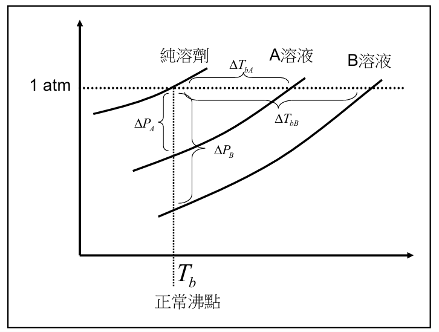
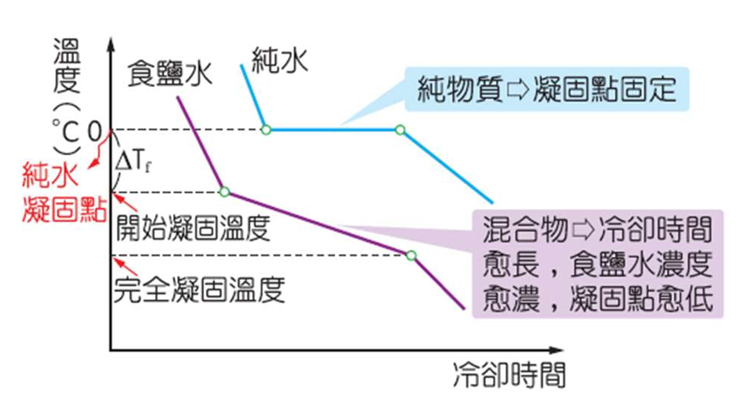

溶液的依數性質
沸點上升、凝固點下降與滲透壓
溶液的依數性質 (Colligative Properties)
什麼是依數性質？
溶液的某些物理性質，與溶質的本性（種類）無關，而只決定於溶液中溶質粒子的數量（濃度），此稱為依數性質。
包含以下四種性質：
- 蒸氣壓下降 ($\Delta P$)
- 沸點上升 ($\Delta T_b$)
- 凝固點下降 ($\Delta T_f$)
- 滲透壓 ($\pi$)

溶質粒子阻礙溶劑蒸發，導致蒸氣壓下降
沸點上升與凝固點下降
沸點上升 ($\Delta T_b$)
加入非揮發性溶質後，溶液蒸氣壓下降，導致沸點比純溶劑高。
$\Delta T_b = K_b \times C_m \times i$
$K_b$：莫耳沸點上升常數 (水為 $0.52\text{ }^\circ\text{C/m}$)
$C_m$：重量莫耳濃度
$i$：凡特荷夫因子 (解離出的粒子數)



凝固點下降 ($\Delta T_f$)
無論溶質是否具揮發性，溶液的凝固點均會比純溶劑低。
$\Delta T_f = K_f \times C_m \times i$
$K_f$：莫耳凝固點下降常數 (水為 $1.86\text{ }^\circ\text{C/m}$)
$C_m$：重量莫耳濃度
$i$：凡特荷夫因子
1 / 8
≡